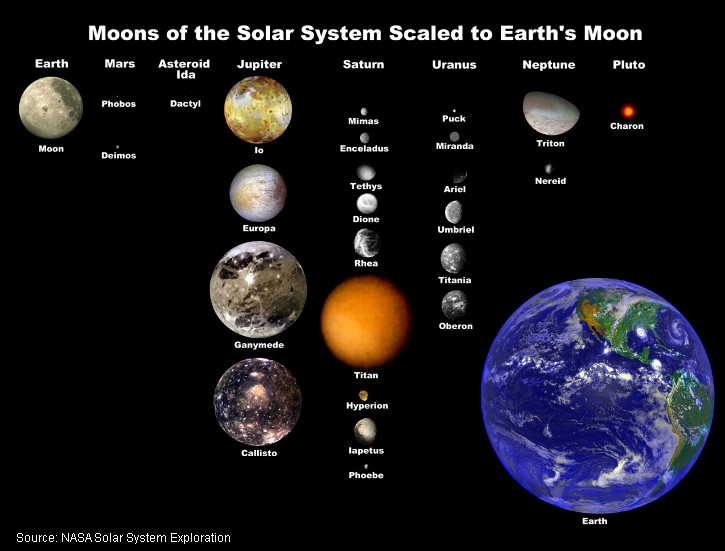

More about moons
Natural satellites that orbit planets are often called moons.
Did you know that:
There are at least 140 moons within Earth's solar system.
Jupiter has more than 60 moons and Saturn has more than 40 moons.
Mercury and Venus have no moons at all.
Earth has one large moon ("The Moon").
Mars has two tiny moons.
Pluto has a very large moon named Charon (sometimes considered a double planet).
Visit
related resources at NASA
for further reading.

© 2006, Geophysical Institute, UAF